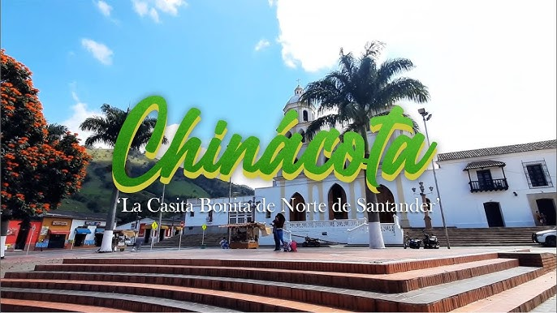
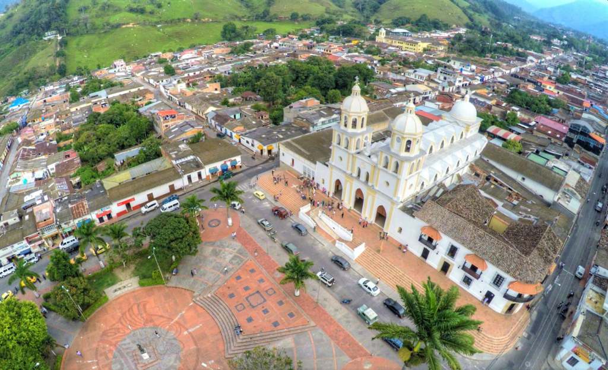
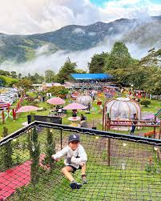
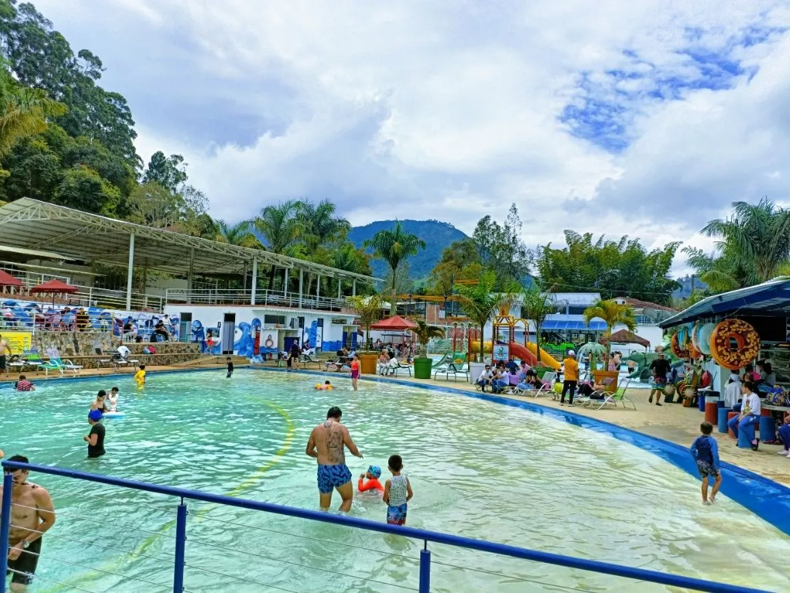

My trip to Chinácota, Norte de Santander

Chinácota is a small town in Norte de Santander, Colombia. It is about one hour from Cúcuta. Many people go there to relax and enjoy nature.
The weather is cool and pleasant. The town is famous for its beautiful mountains, green landscapes, and peaceful environment.
Visitors can walk around the town, try local food, and enjoy the calm atmosphere. It is a good place to get away from the city.

Last year I went to Chinácota with my family. We woke up early and drove from Cúcuta. The trip took about one hour.
When we arrived, we walked around the central park and looked at the old church. The town was quiet and very clean.
Later we sat down in a small restaurant and tried local food. I really liked the soup and fresh juice.
In the afternoon we went up to a viewpoint to see the mountains. The view was amazing. Before going back home, we bought some local snacks to take home.

One place you should visit is the Central Park. It is the heart of the town and many people hang out there in the afternoon.
Another great place is the viewpoint near the mountains. You can go up there and look out at the beautiful landscape.
You can also check out the local market. There you can find traditional food and local products.

You should bring comfortable clothes because the weather can be cool.
You must try the local food because it is very delicious.
You should get up early if you want to enjoy the town without many people.
You can bring a camera because there are many beautiful places to take pictures.
You should not leave trash in nature. It is important to keep the place clean.